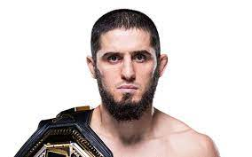
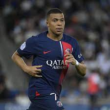
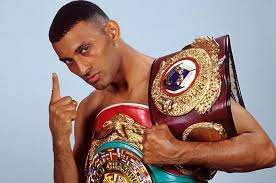

Hello, I'm Adil ğŸ˜
I am 22 years old, I grew up in Morocco and France I'm now currently studying at ESSEC Business School in Cergy.
I am fond of sports , all sort of games and I love to travel and learn new things especially physics.
⚽ FOOTBALL ⚽
Since I'm young, I love playing and watching football. My favorite team is the Morrocan team. I was very happy when Morocco represented Africa in the 2022 world cup as it was the first african country which went to the semi-finals in history 🇲🇦🏆
Since I lived in Morocco, I also like playing beach-soccer ⚽ beach-volley 🏐 and swimming 🏊‍ On the other hand, I like to watch MMA 🥊 but it is quite complicated because of the jetlag 🕗 between USA and France.
Here are some of my favorite sportsmen :

- 
- 
- 
✈️ 🌍 TRAVEL 🌠✈ï¸
As I am very curious, I love travelling and discovering new places. My first holidays were in United Kingdom 🇬🇧 in Oxford, and my last holidays were in Barcelona, Spain 🇪🇸
Here is the list of part of the countries I visited:
- 🇨🇿 Czech Republic 🇨🇿
- 🇸🇪 Sweden 🇸🇪
- 🇧🇪 Belgium 🇧🇪
- 🇳🇱 Netherlands 🇳🇱
- 🇦🇪 United Arab Emirates 🇦🇪
- 🇬🇧 United kingdom 🇬🇧
- 🇩🇪 Germany 🇩🇪
- 🇪🇸 Spain 🇪🇸
🍽️ FOOD 🍽️
Passionated by international gastronomy. I like eating ramen 🲠mexican burritos 🌮 and bosnian pita. However, the best dishes in the world are from Morocco 👩â€ğŸ³
Since I'm a student, I often eat pizzas 🕠burgers 🔠and pasta 🏐 .. but when I have time I like cooking better dishes like chicken curry with rice 😋
👨‍👩‍👧‍👦 FAMILY & FRIENDS 👨‍👩‍👧‍👦
I have one cousin whose name is Anes 🙋†he is 16 years old. He started calisthenics, and studies 📠at Lycée Lyautey Casablanca. We have the same passions, fighting and calisthenics. We created a bond as we look like two brothers who didn't grow up together but the personnalities are the same.
I love my little cousin Mayssa, 👦 she is very funny 🊠and a little bit crazy 😈. Even if she is pretty noisy, she loves everyone and can show you affection.
My bestfriend's name is Sada. She lives in a small town 🡠in France called Yssingeaux (near Lyon) 🕺.